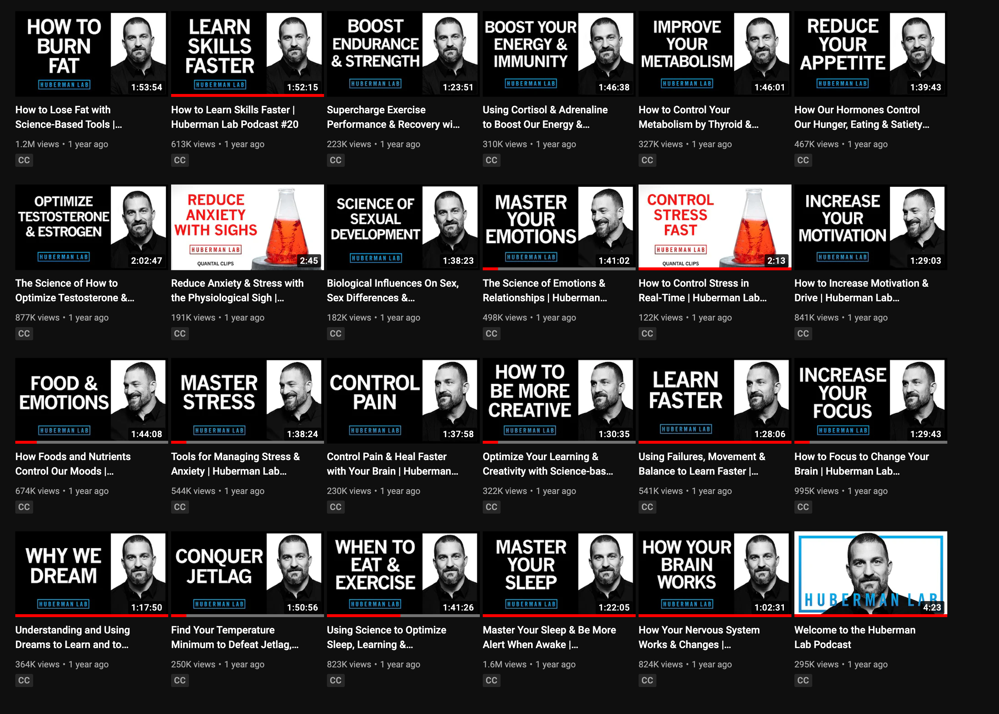

Do you believe in free will? You may or may not believe in free will, but you can’t deny the importance of context. Your context is the environment in which you live in and the content you consumed in the past. Your next move is probably already decided or heavily influenced by your context.
Garbage in garbage outThis I read this phrase from Steal Like an Artist (affiliated) which is the first English book I read, it stuck in my head till this day.

I have been listening to podcasts for a few years now. Apart from books, podcasts became the main source of information for me.
Huberman Podcast
This is probably the best podcast on health and wellness. Professor Andrew Huberman covers a lot of relevant and useful topics. Our body is the only machine that does not come with a user manual. The content Hubermanlab provides can be used as that missing manual. 
The Joe Rogan Experience
He had some controversial stuff in the past as like the most public figures, so take everything he says with a grain of salt. After hearing lots of MMA and fighting related content, I decided to try out Muay Thai, and it has been the best thing I tried for a long long while. I think Muay Thai had tremendous affect on my physical and mental health.
Combat sports not only can straighten your belly but also your ego and confidence.Another great thing about his podcast is that he introduces a lot of people from different backgrounds, I got to know David Goggins, Wim Hof, Graham Hancock, Guy Ritchie and many more.
It has been more than two years since I started taking cold showers. It kinda gives me the shock and energy to go on when I am low.
David Goggins has a great book. Can’t Hurt Me: Master Your Mind and Defy the Odds (affiliated) . The book is about a lazy ass man’s redemption through physical training. It is also a journey of learning how to control your mind. It is really fascinating.

Lex Fridman Podcast
He has really awesome guests. Most of his content is intellectually heavy.